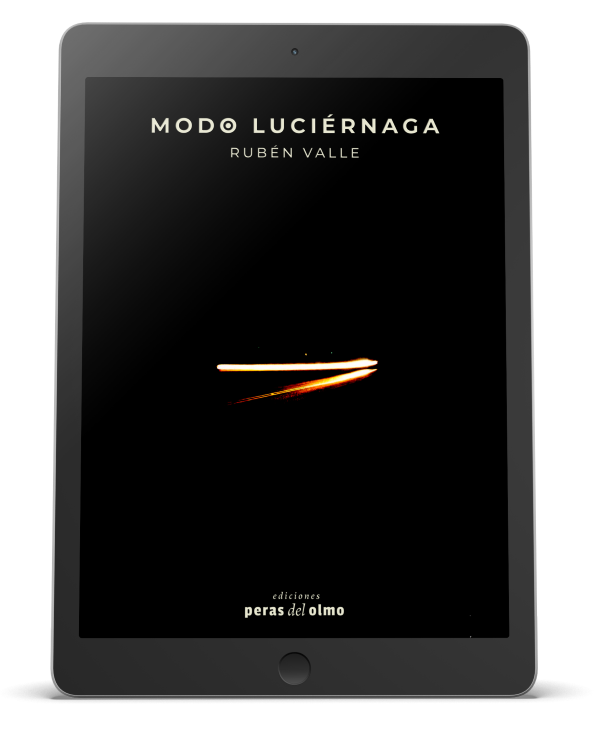

presenta
Modo
luciérnaga
La narrativa breve vuelve a ser la protagonista del nuevo libro del periodista
y escritor mendocino. Se trata de 62 textos que tienen muchos puntos en
común con sus dos trabajos anteriores en el género -Desperté en el bosque después de haber soñado un bosque y La medida de lo posible-
en cuanto a la vocación de contar historias pero sin renunciar a una mirada
poética que corra del eje aquello que damos por supuesto. Una invitación
a encontrar en estas pequeñas piezas lo que supone toda buena literatura:
el placer de leer como si alguien al oído nos devolviera a aquel momento
irrepetible en que escuchamos "Había una vez..." y ya nada volvió a ser
igual.
descargar epub
para leer en iBooks, Google Play Libros u otros
descargar mobi
para leer en Kindle
descargar pdf
para leer en otros dispositivos